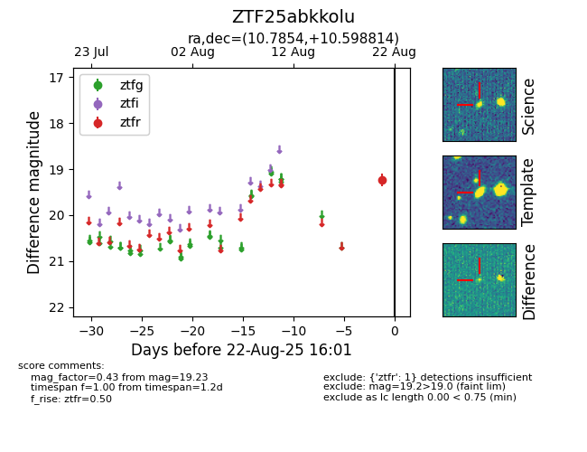

Target ZTF25abkkolu at 2025-08-22 16:01, see:
FINK: fink-portal.org/ZTF25abkkolu
Lasair: lasair-ztf.lsst.ac.uk/objects/ZTF25abkkolu
ALeRCE: alerce.online/object/ZTF25abkkolu
alt names
ZTF25abkkolu (ztf,alerce)
coordinates:
equatorial (ra, dec) = (10.7854,+10.59881)
galactic (l, b) = (119.6031,-52.21930)
photometry
last ztfr=19.23
1 ztfr detections
